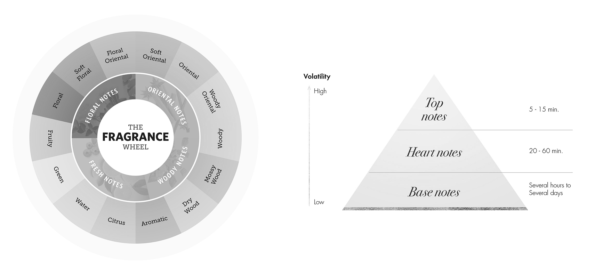
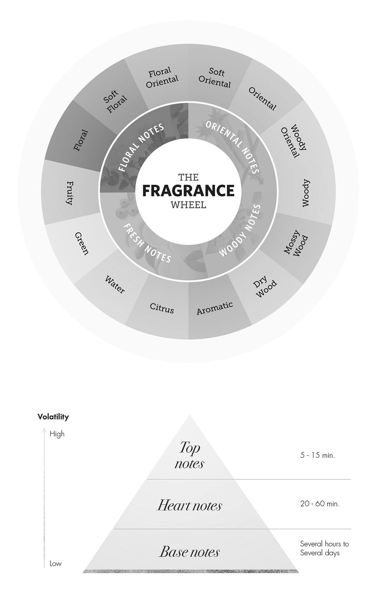
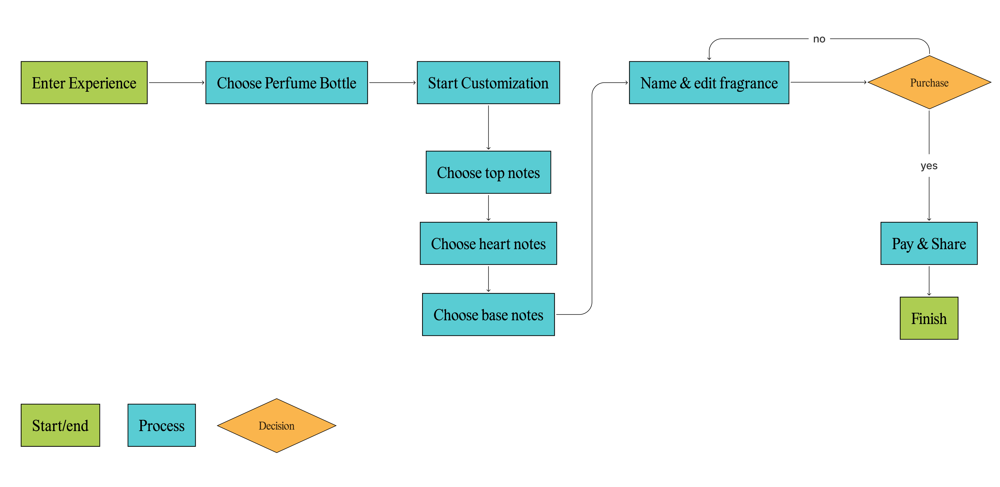
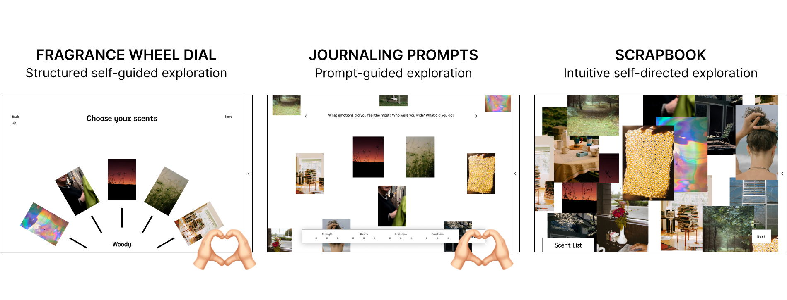
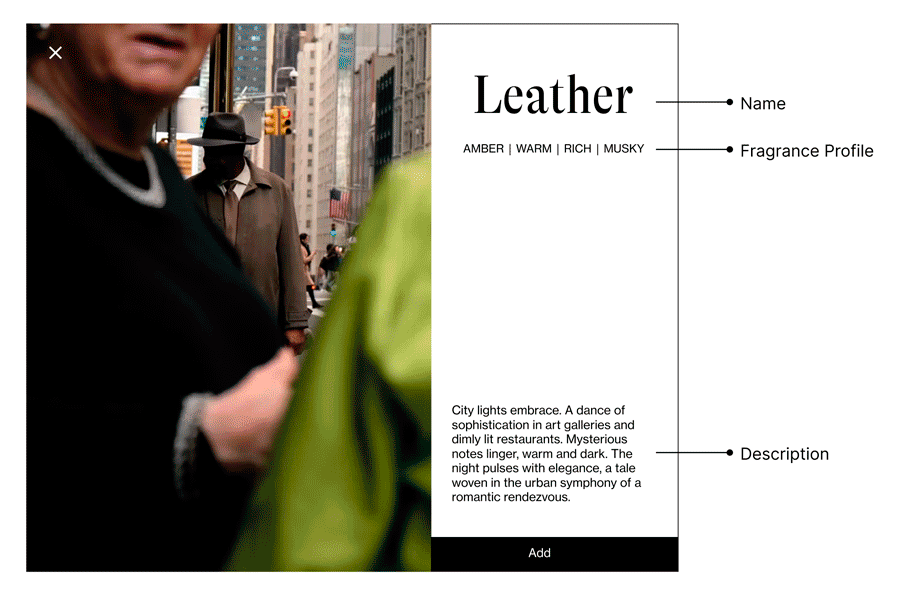
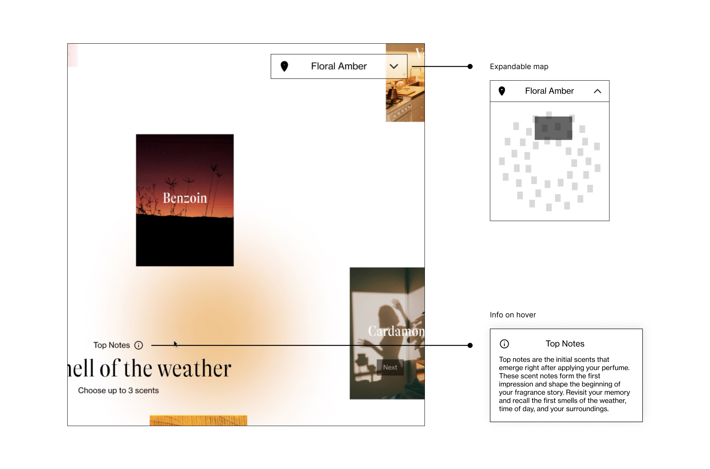
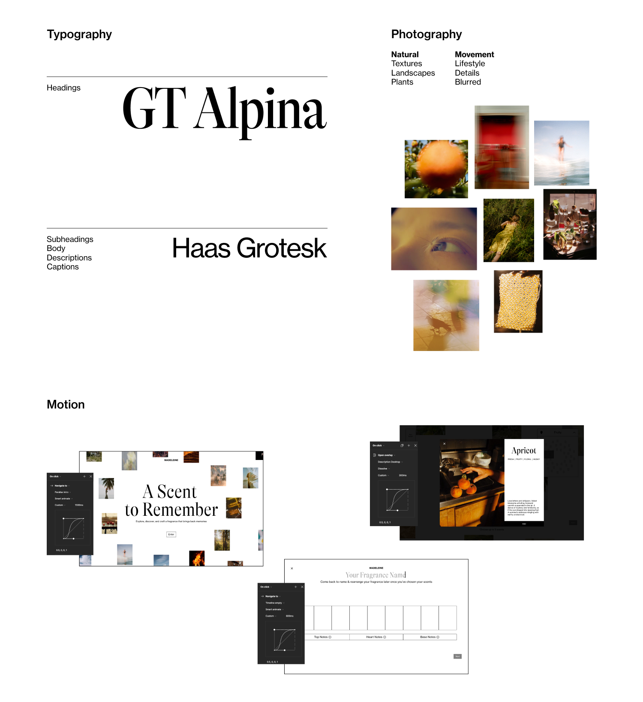

Broomies
Chore Tracking & Management for Roommates
Nov 2024
3min read
Role
User ResearchWireframingPrototyping
Timeline
2 Days
Team
2 Designers
2 Product Managers
Dec 2024
5min read
In a nutshell
Students in shared living use ineffective chore tracking systems and have difficulties maintaining equal effort and accountability. Broomies is an app that helps manage and divide of a variety of household tasks and uses photo verification and money to increase incentive and accountability.
This project is a submission for UX Open, a 2-day Design competition hosted by UBC Biztech with 70+ participants.
Problem
It's impossible to smell through a screen
In this student project, the main goal is to conceptualize a fictitious brand's microsite for customizing and purchasing perfumes. The challenge of scent is further amplified as a business selling customized products, since consumers have no way to "try before they buy.”
How might we creatively and accurately create the illusion of scent in the digital space?
Solution
Blending Scent with Memories
A Scent to Remember invites the user to take a walk down memory lane and recreate their favourite moments in a fragrance. Through a digital journey that highlights the relationship between scent, emotion, and nostalgia, users can easily understand the concept and leave the experience eager for their memory in a bottle to arrive.
Research
Fragrances Briefly Explained
To understand more about the fragrance industry, I learned about the fragrance families and notes. Here are my key learnings:
 The Fragrance Wheel
There are 4 main families of fragrances (fresh, floral, oriental/amber, and woody) that are most commonly represented on a wheel to show their subfamilies and relationships between each other.
Fragrance Notes
Fragrance notes (top, heart, and base) are layers of a perfume that vary in strength and unfold over time: top notes appear and fade the quickest while base notes are deeper and linger the longest. Together they create the perfume's unique structure and overall character.
The Underrated Memory Trigger
We often underestimate our sense of smell, but it has a surprisingly strong link to our memories. This is because the olfactory bulb is very close to the amygdala and hippocampus, the brain regions responsible for emotion and memory. I used this unexpected connection to spur creative ways of visualizing and describing scent on a screen.
Key Design Considerations
User Flow
Before any visual exploration, I created a simple user flow to give myself a guide for the processes and pages I'll need to consider down the road.
How do I create an immersive and intuitive experience?
To design the main customization page, I researched common design patterns for all kinds of customizable products, like Vitra and Radbikes, and distilled my ideas into three key concepts. With Garret’s help, we decided to move on with a combination of the wheel and journaling concept.
I continued to iterate and decided to use the Fragrance Wheel as the basis for the main layout, offering users a logical way to navigate and explore scents as they please.

How do I communicate scent visually?
Keeping with the theme of recreating memories, each scent is associated with a set of curated visuals and a short description to set the scene for a moment or common experience. This creates a more engaging experience and helps the user better imagine what the scent would smell like.
How can I guide users who are unfamiliar with fragrances?
The customization process encourages users to retell their own story by providing prompts that evoke scents as a response. These cues also align with the roles that different fragrance notes play in the final perfume composition. For instance, the prompt “The smell of the weather” is an appropriate prompt for top notes, which are the first to emerge and fade away the fastest.
This provides an easy way for users to connect scents to something they’re definitely familiar with: their personal experiences.
More information is provided for users who want to know more about the scents and the reasoning behind each prompt. There's also a map in the upper right that displays the user's position in the fragrance wheel, allowing navigation through dragging or clicking.
Final Product
Visual Language
Start Your Journey
Explore & Build
Users can drag the entire screen or click on a location on the map to navigate the wheel. The colour gradients that follow the cursor also represent the different scents and change depending on your location on the wheel.
Click into the tiles to reveal scent stories and use the prompts as a guide to choose which ones to add to your fragrance.
Make it Yours
The scent can be named rearranged on the timeline until the user is satisfied.
To showcase the user's creation, a timeline of moving photos sweeps across the screen for an immersive final experience. A simplified version of this video can be downloaded or shared on social media, allowing users to highlight their unique creation.
Read More
-
-
Chore Tracking & Management for Roommates
Broomies • Nov 2024